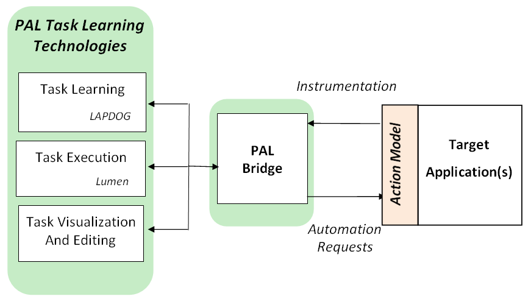

The PAL Task Learning component, called Adept, provides learning-by-demonstration technology to enable the automation of routine or time-consuming tasks, thus freeing users to focus on more cognitively demanding activities.
The core of the Adept task learning component system is a module called LAPDOG (Learning Assistant Procedures from Demonstration, Observation, and Generalization). Given a demonstration consisting of a sequence of actions performed by a user to achieve a particular task, LAPDOG generalizes the action sequence into an executable procedure for achieving similar tasks in the future. LAPDOG subscribes to a dataflow model in which actions are characterized by their inputs and outputs, and action outputs serve as inputs to succeeding actions. Procedure generalization includes ensuring that every action input is supported by a previous output.
LAPDOG performs parameter generalization, generating a replacement of constants with variables or (accessor/construction) expressions over variables that reflect the dataflow observed in the demonstration. This generalization enables procedures to be reused in different situations and to different effect. LAPDOG also performs structure generalization, inducing loops over collections of objects by identifying and generalizing the repeated sequences of actions in the demonstration. LAPDOG's loop-induction algorithm supports advanced features such as learning loops over both ordered and unordered collections of objects and loops that process multiple lists simultaneously. Parameter and structure generalization are performed synchronously, so LAPDOG can learn loops over collections nested to arbitrary depth, and loops over collections that are the output of previous loops.
LAPDOG can learn from a single example, through the use of heuristics for filtering the set of alternative generalization hypotheses to a single best generalization. But it can also exploit the availability of multiple demonstrations to improve the quality of the learned procedure.
Learned procedures are executed by the Lumen agent framework, which is derived from the SRI Procedural Agent Realization Kit (SPARK). Lumen's hierarchical representation of tasks combined with instrumentation of task execution makes it possible to teach procedures that in turn invoke other learned procedures. This task composition enables incremental development of modular libraries of interdependent procedures.
Adept includes an interactive editor that enables users to visualize and modify learned procedures. The editor facilitates understanding and sharing of procedures by providing the means for a user to inspect a procedure's structure before executing it. It also permits users to adapt learned procedures quickly rather than demonstrating them again from scratch to incorporate changes.
Adept is application-independent. Its use within a particular application requires the definition of an action model that provides a semantic specification of individual actions in the application along with implementation of corresponding mechanisms for instrumenting and automating those actions. In essence, the action model provides the basic building blocks from which learned procedures are created. Applications interact with the task learning technologies via a bridge module through which all communication (i.e., instrumentation events and automation requests) flows.

Because of its dataflow model, the PAL task learning component is well suited to applications whose actions can be framed as operating on objects in the environment, and the effects of the actions can be captured in terms of action outputs that generally serve as inputs to succeeding actions. In its current form, the PAL task learning component is not well suited to applications whose actions are best captured in terms of their effects on the environment rather than in terms of the data they produce and consume. This is discussed in the Client Application Guide - Action Model section.